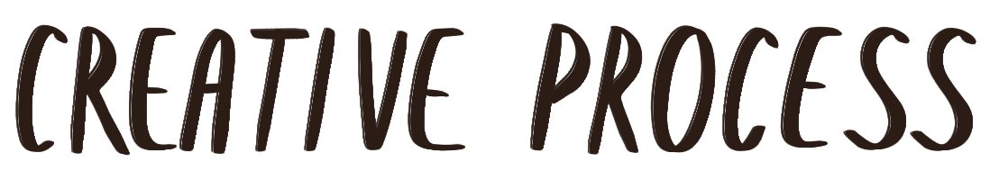

Plein Air
My process begins outside the studio. Working plein air allows me to capture real light, the atmosphere of the place, and the immediate energy of the surroundings. In front of the easel, I record the initial brushstrokes, live color, and the essential structure of the scene.

The Studio
Back in the studio, the pace shifts. It is a space for pause, reflection, and technical development. In the studio, I pick up the work started outdoors to refine the composition, work the matter and layers with more calm, until reaching the definitive balance of the piece.